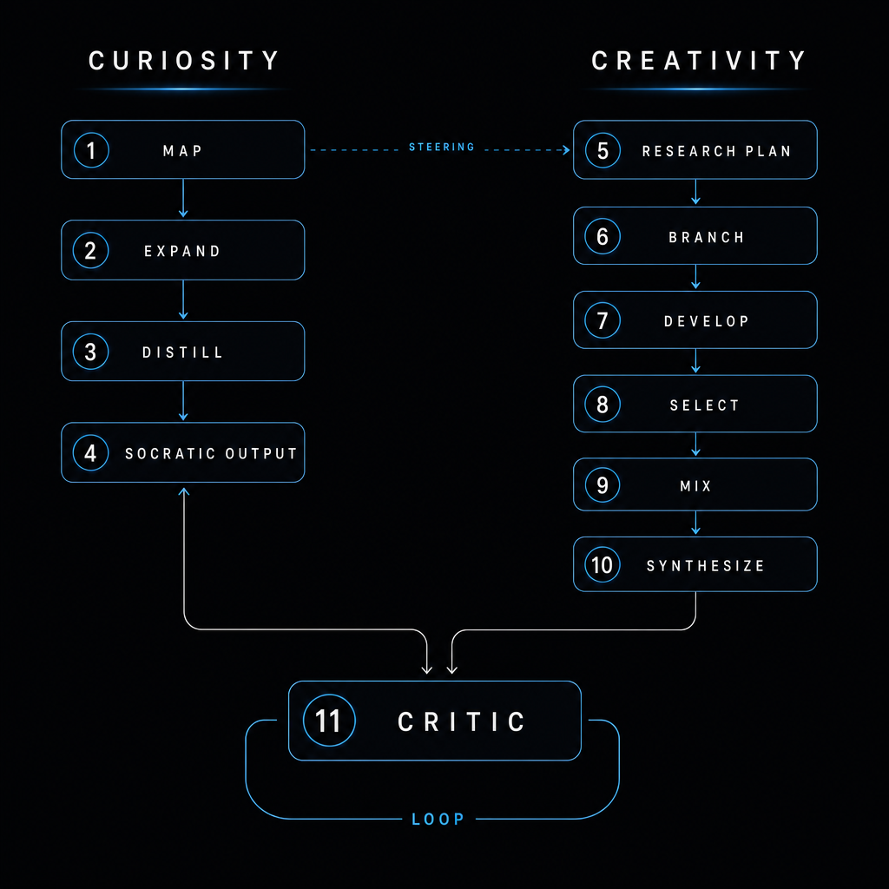
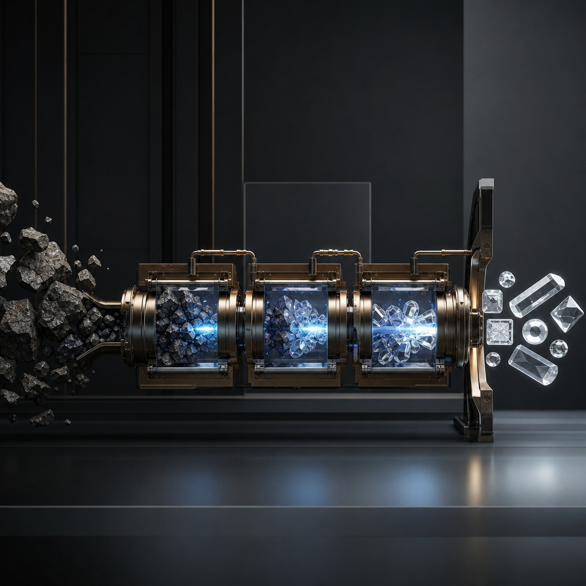
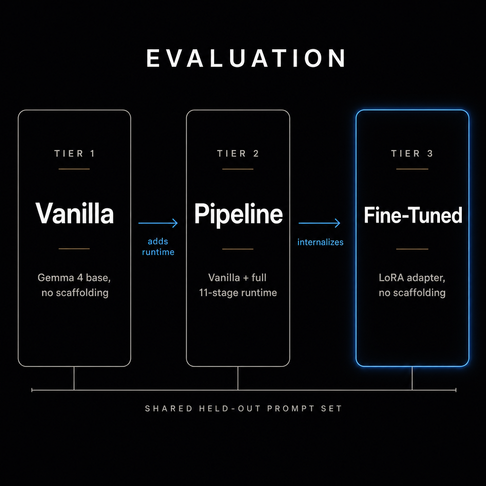
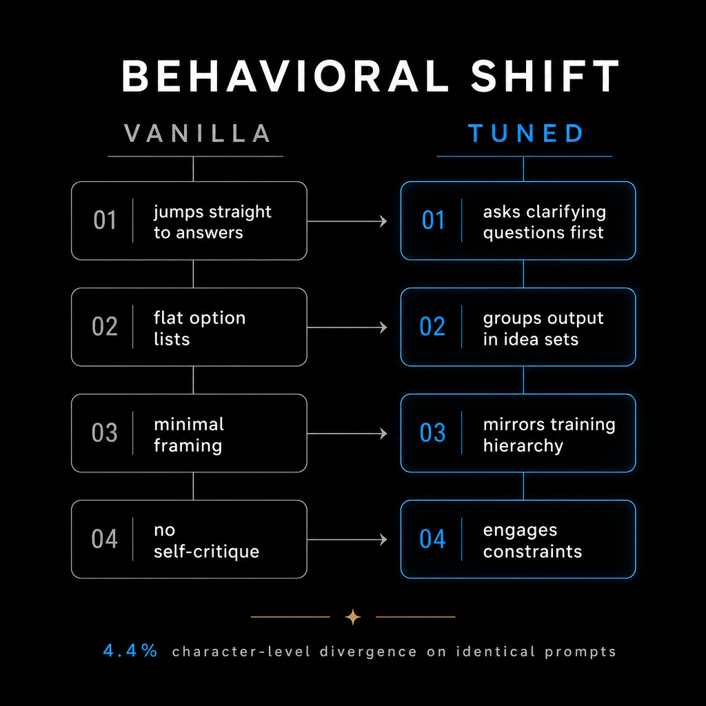
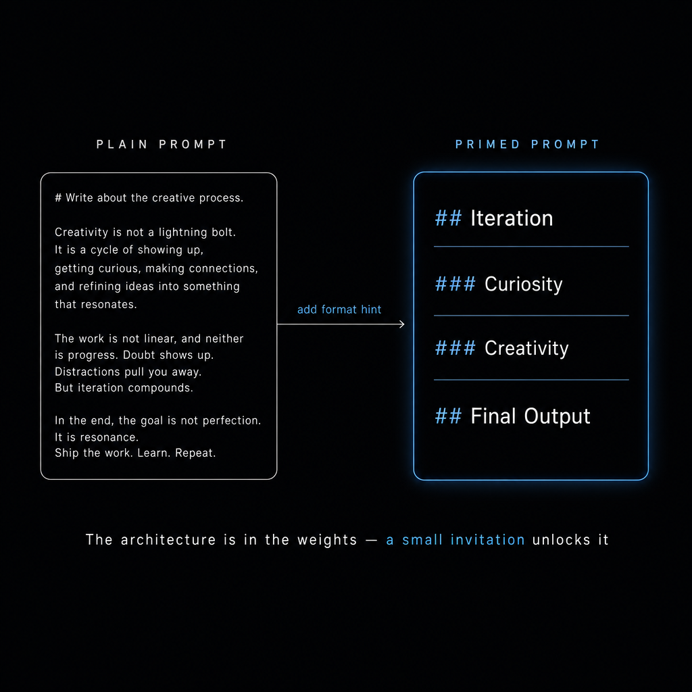
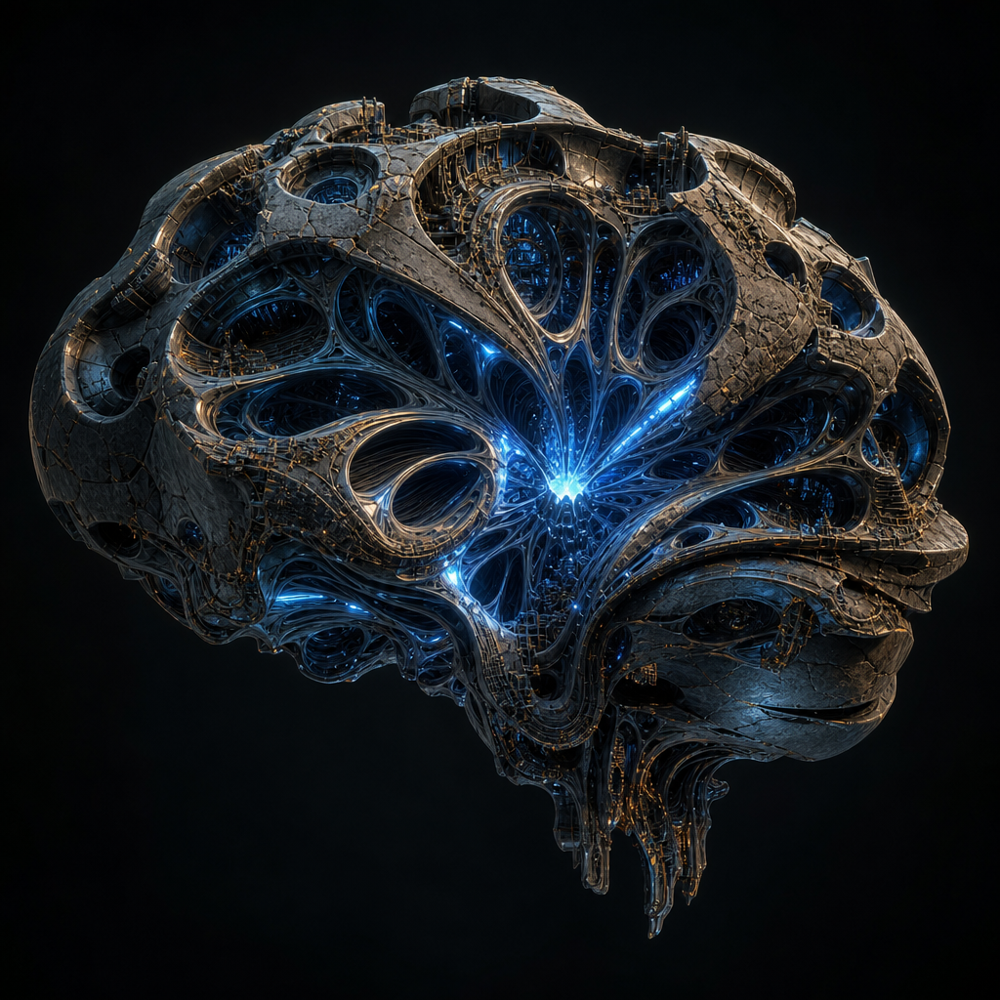

Gemma 4 Good Hackathon · Education Track
Gemma 4
Creative Reasoning
Fine-Tune
A pipeline that maps how humans think creatively, then fine-tunes Gemma 4 on its own reasoning traces to make creativity native to the weights.
Alin Bolcas · Arvolve · 2026
The problem
Creativity is where current LLMs
are weakest.
Models output what their training data and stochastic sampling allow.
For five years of testing, none have produced a truly original idea —
not even for something as small as naming.
The hypothesis behind this project: if we reverse-engineer the cognitive process behind human creativity, capture it as structured traces, and fine-tune Gemma 4 on them — the model should approach problems more creatively even without the runtime scaffolding.
The hypothesis behind this project: if we reverse-engineer the cognitive process behind human creativity, capture it as structured traces, and fine-tune Gemma 4 on them — the model should approach problems more creatively even without the runtime scaffolding.
Architecture
Two streams.
One reasoning loop.
Inspired by introspection on how humans arrive at original ideas: first a curiosity phase that maps the unknown and questions the framing, then a creativity phase that branches, prunes, and recombines.
A critic closes the loop. Eleven stages total, each a separate LLM call with its own schema and validation.
A critic closes the loop. Eleven stages total, each a separate LLM call with its own schema and validation.

Stream 1 · Curiosity
A Socratic engine.
It never answers.
- Map — five lenses on the problem: assumption, opposite, expert, frontier, cross-domain
- Expand — branch into questions per domain, ranked by non-obviousness
- Distill — leverage-score the questions, keep the highest-impact set
- Socratic output — structured steering signal that frames everything downstream
Stream 2 · Creativity
Branch. Prune.
Recombine.
- Research plan — frame the search space using the curiosity signal
- Branch — N structurally distinct directions, not just rewordings
- Develop — exhaust each branch independently before comparison
- Select & prune — natural selection by novelty and combinability
- Combinatory mix — cross-pollinate survivors into hybrids unreachable from any single branch
- Synthesize — final candidates with provenance back to source branches
Combinatorial mixing is the heart. Akin to how DNA recombines or how neural signals bridge cortical regions —
new ideas emerge from organic recombination, not from any single chain of thought.
Stage 11 · Critic
Pass — or loop.
Every candidate scored on novelty and relevance. Both thresholds at ≥ 7 / 10.
On FAIL, the critic sends targeted feedback back to both streams and the full loop runs again. The architecture refines its own output until the critic agrees — or budget runs out.
On FAIL, the critic sends targeted feedback back to both streams and the full loop runs again. The architecture refines its own output until the critic agrees — or budget runs out.

Training data · honest story
Self-distillation
wasn't enough alone.
The original intent: Gemma 4 generating its own traces, no teacher.
~300 self-distilled examples trained cleanly but produced no measurable shift.
To reach scale, the same 11-stage pipeline was run with a third-party API model. Final corpus: 4,771 SFT examples (~14k turns) across 8 domains.
The claim still holds: the architecture is recoverable from Gemma 4 — internalizing it is what needs volume.
To reach scale, the same 11-stage pipeline was run with a third-party API model. Final corpus: 4,771 SFT examples (~14k turns) across 8 domains.
The claim still holds: the architecture is recoverable from Gemma 4 — internalizing it is what needs volume.
Training run
LoRA on a frozen base. Clean descent.
| Base | google/gemma-4-E4B-it · 8.07B |
| Adapter | LoRA · r 16 · α 32 · dropout 0.05 · 73.4M trainable (0.91%) |
| Run | 2,148 steps · 2 epochs · 4.4 h · Kaggle T4 (16 GB) |
Evaluation
Three tiers,
one held-out set.
- Tier 1 — Vanilla Gemma 4. Baseline behavior.
- Tier 2 — Vanilla + full 11-stage pipeline at runtime. Does the architecture work at all?
- Tier 3 — Fine-tuned adapter, no scaffolding. Did the architecture transfer into the weights?


Result · honest
Soft transfer.
Not dominant.
At default sampling, the tuned model doesn't spontaneously emit the verbatim trace format —
~4.7k examples can't outright override trillions of instruction-tuning tokens.
But the adapter is alive. In side-by-side tests it more often asks clarifying questions first, uses tighter idea-set groupings, and stays more constraint-aware than vanilla.
But the adapter is alive. In side-by-side tests it more often asks clarifying questions first, uses tighter idea-set groupings, and stays more constraint-aware than vanilla.
The format is in the weights
A small invitation
unlocks it.
Plain prompt → polished markdown, no trace structure.
Same prompt + a light format hint → the full hierarchy:
Same prompt + a light format hint → the full hierarchy:
## Iteration → ### Curiosity → ### Creativity → ## Final Output

A practical lever
Temperature sweet spot.
Below 0.5 collapses to baseline. Above 1.0 becomes noise.
0.6–0.8 expands sampling enough to benefit branch-and-select without breaking coherence.

Why this matters
Creativity is the lock
to self-improvement.
The moment we crack creativity, everything compounds —
genuine novelty, original research, self-improving systems.
It's the most impactful unsolved problem in LLM development, and it's the difference between a model that recombines what it knows and one that produces something genuinely new.
Winner-takes-all direction.
It's the most impactful unsolved problem in LLM development, and it's the difference between a model that recombines what it knows and one that produces something genuinely new.
Winner-takes-all direction.
Teach the process.
Not just the answer.
Gemma 4 Creative Reasoning Fine-Tune
Track
Education
Author
Alin Bolcas
Repo
github.com/AlinBolcas/Gemma4_FineTune_Creativity
Gemma 4 Good Hackathon · Kaggle × Google DeepMind · 2026